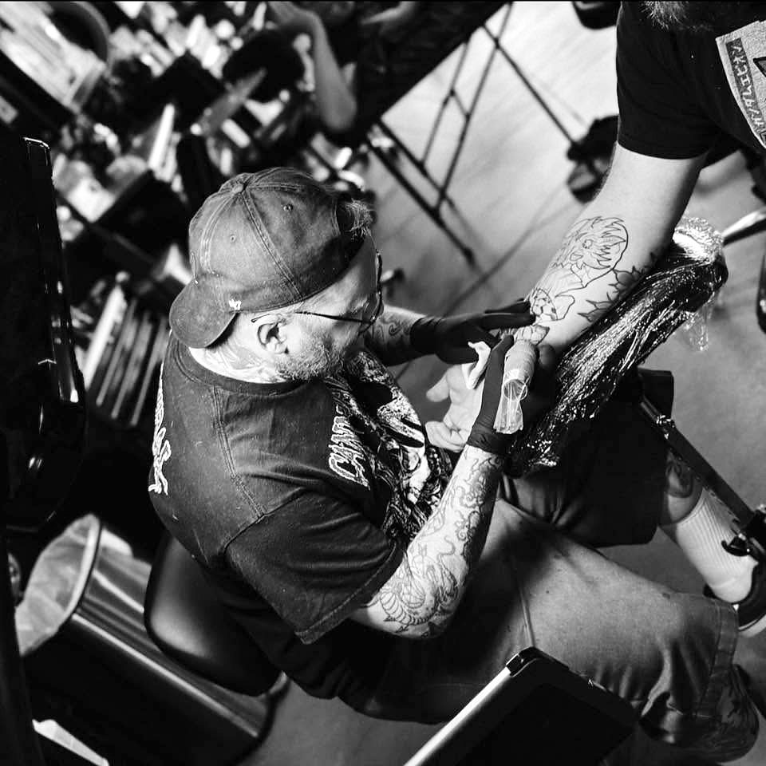

About Aarron
Born in the Chicago suburbs, Aarron has spent most of his adult life in Texas. He has been around tattoo shops since 2001, watching the industry shift for more than two decades.
After high school he enlisted in the Navy, serving from 2003 to 2009 as he figured out what he wanted to do next. When that term ended, he went straight into tattooing. He started a traditional apprenticeship in South Texas under Joseph King around 2009 and finished in early 2010. From there he traveled through Texas and out of state, working to tighten his craft. In 2019 he joined Faces In The Dark Tattoo alongside Tye Harris and crew to push himself and his work further.
16 years in, he still leans into what clients keep coming back for: bold linework, solid color, and designs that heal clean. Traditional and neo-traditional sit at the center of that, and he figures the Navy years and the old shop culture did not hurt. He is open to other styles when the piece calls for it, and cover-ups and reworks are a regular part of the work. Over the last two-plus years he has also been teaching his first apprentice, Trang Phan, with the goal of turning out a solid, well-rounded artist who can handle whatever walks in the door.
Outside the shop he sticks close to his pugs, Clyde and Felix. He games, plays TCGs and tabletop, watches pro wrestling, and roots for the Kansas City Chiefs. He is an avid Classic World of Warcraft player and sometimes streams on Twitch as nf3stro4ch.